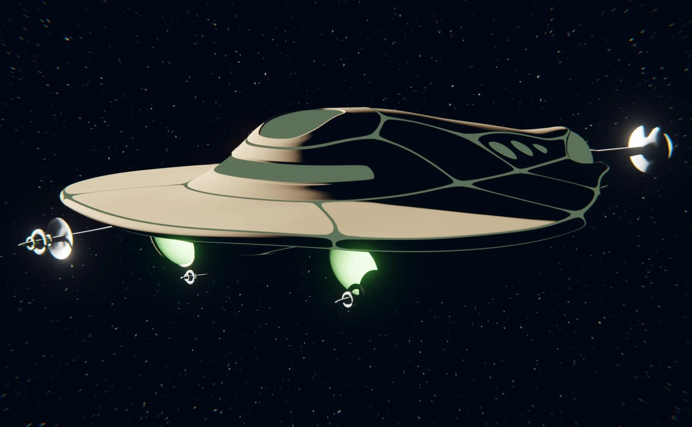

I started learning artistic 3D modeling in 2018, and it quickly became one of my favorite mediums. I use Blender, which is a free, open-source mesh-based software.
-
3D Art
-

The Stingray (Spring 2021)
I wanted to design a unique sci-fi spaceship and got the idea that I could model one after a fish. I liked the sleek form of a stingray and thought the front even bore some semblance to the classic flying saucer.
-
Rotating model of the library
The Library (Spring 2021)
I modeled this library and marked "freestyle" edges on it. When the model is rendered, the marked edges that are visible in camera are covered by procedurally generated pen lines. This technique is called cel-shading.
-
Harbor Scene (Winter 2021)
I started putting this scene together when I was still new to 3D modeling. I rendered it with realistic lighting but didn't like the effect. Years later, I came back to it and made this cel-shaded render.
-
Sailboat (Spring 2021)
I took this sailboat from my harbor scene and animated it rolling over some waves.
-
Kitchen Items
I originally created these models for a game that didn't take off. When I started working on an animation project, many of them were re-enlisted as background objects there.
-
Robo-Chimp (Summer 2021)
I made this basic model of a robot chimpanzee as a proof of concept. I was inspired by Atlas, FEDOR, and of course, biological chimpanzees.
I hope to create a more detailed model in the future with internal components and realistic junctures.